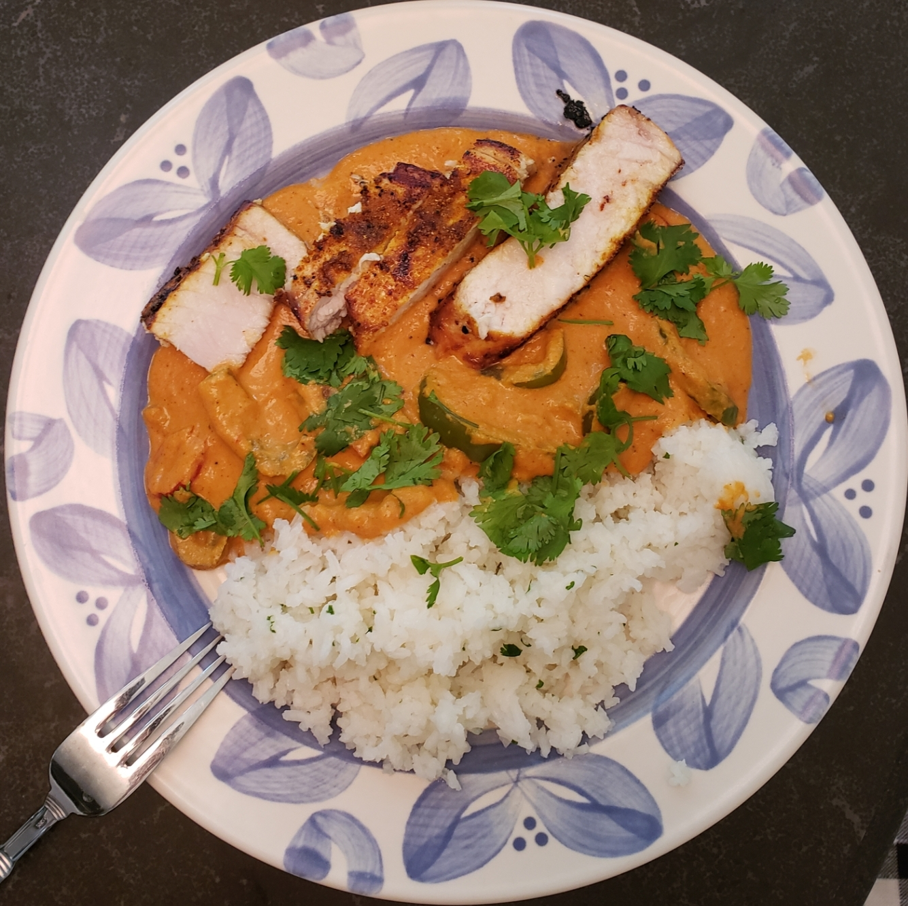

Masala Gravy Recipe
August 8, 2021

Figure 1: Swordfish Tikka Masala I made using this gravy
Goes great over rice or with naan! Paneer and vegetables go well to keep the recipe vegetarian.
I used these two recipes as a reference:
Ingredients
- Neutral vegetable oil
- 1 can diced tomatoes (I used Hunt’s Fire Roasted)
- 1 large yellow onion
- Cashews (~1 small handful)
- 2 small cloves garlic and an equal amount of ginger
- A couple Thai green chillies if you want it really spicy
- 1 tsp cumin powder
- 1 tsp coriander powder
- 1 tsp red chilli powder (use chipotle for a better flavor imo)
- 1 tsp garam masala
- 1/2 tsp turmeric powder
- A pinch each of cinnamon and clove
- 1/4 cup fresh cream (heavy whipping cream works)
- Cilantro for garnish
Steps
Cooking the vegetables
First, heat up some oil in a large skillet on medium heat. Finely dice the onion – no need to be too careful though since it’s getting blended later. Throw the onion in the pan and mince or grate the garlic and ginger while they’re cooking. Throw the garlic and ginger in with the onions and continue cooking until everything’s translucent and soft. Then, add the can of tomatoes and cashews and continue cooking until most of the tomato’s acidity has mellowed out.
Mix all the spices (except the cinnamon and clove), brush out an opening in the center of the pan, and toss in the spices – toasting until they’re aromatic. Afterwards, mix everything until the spices are fully incorporated.
Blending
Next, take the pan off the heat and pour in a little cold water to cool it down. Once cooled, pour into a blender and blend into a fine puree – take care to make sure there’s no lumps by tasting and stop blending once you’re happy with the consistency. Add more water as necessary until the puree is only slightly thicker than the desired final product.
Cooking part II
Heat up a little more oil in the pan on medium heat and throw in the cinnamon and clove once it’s hot. Cook only for a few seconds until they’re aromatic. At this point, feel free to cook any vegetables or such you’d like to add into the gravy. Next, pour the puree into the pan and cook until the oils within start to separate and the tomato flavor has mellowed out entirely. Once done, take off the heat and pour enough cream in to reach the desired consistency and flavor. Garnish with cilantro.